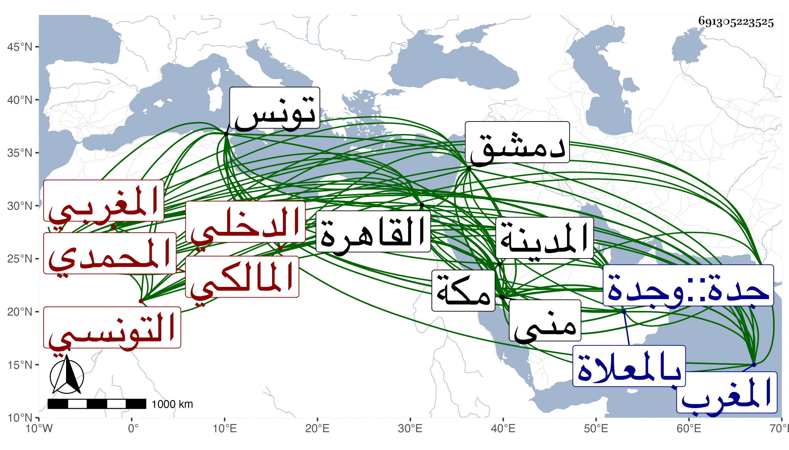

0902Sakhawi.DawLamic.ITO20230111-ara1.EIS1600.691305223525
Biography ID: 691305223525
305
عبد المعطي بن خصيب بمعجمة ثم مهملة كطبيب ابن زائد بن جامع أبو المواهب بن أبي الرخا ... بمعجمة المحمدي نسبة لعرب بالمغرب يقال لهم بنو محمد التونسي المغربي المالكي نزيل مكة ، ونسبه ابن عزم باليزليتني الدخلي ، ولد سنة تسع وعشرين وثمانمائة أو في التي بعدها ببادية تونس ونشأ بتونس فأخذ الفقه وأصوله والعربية وغيرها عن عيسى الحصيبي وعلى العربي الحساني التونسي وأبوي القسم المصمودي والفهمي الفاسي تلميذ ابن عرفة ولازم الثالث فيها وفي القراءات وتهذب بهم في السلوك والعرفان وأتقن أصول الدين بالدخول في كتبه تدريجا مع الرابع ، وكلهم ممن صحب فتح الله العجمي نزيل المغرب بل هو ممن انتمى صاحب الترجمة أيضا إليه ولازمه وتسلك به وأشار عليه بالأخذ عن الأولين وكان الثلاثة حسبما قاله لي في علو الشأن بمكان ممن لهم الكرامات الظاهرة والمكرمات الباهرة وكذا أخذ عن عبد الغني اللجمي أحد من حضر عند ابن عرفة بل حضر أيضا دروس أحمد القلشاني وأخيه عمر ومحمد بن عقاب في آخرين ، وتميز في فنون العلم وطريق القوم وهاجر من بلاده فدخل القاهرة ليلقى من بها من المسلكين والعلماء فرأى بعض العارفين بجامع الأزهر فلوح له بالتوجه لمكة فسافر في البحر فوصلها في أثناء سنة ستين فحج ثم رجع إلى المدينة وسمع بها على أبوي الفرج المراغي والكازروني ودام بها ثلاث سنين يحج في كلها ثم قطن مكة ولم يخرج منها إلا لبيت المقدس ودمشق واجتمع في كل منهما بجماعة كالتقي القلقشندي وابن جماعة وماهر وعبد القادر النووي والبرهان الباعوني والبدر بن قاضي شهبة والزين خطاب وزار الخليل وكان يتحرج من الدخول لعلو السرداب أدبا ويقف بمكان فاتفق أنه رأى الخليل عليه السلام في المنام به وأمره بزيارة بنيه بعد أن كان عزم على الترك حين رأى كثرة الجمع الذي لا يحصل له معه توجه فامتثل ولم يعدم خلقا قاصدين لذلك ، وكان في سنة خمس وستين والتي تليها بتلك النواحي ولم يحج في أول السنتين وعاد لمكة وقد تمكن من العرفان وتفنن في طرق الإرشاد والبيان فانقطع بها كل ذلك وهو متقلل من الدنيا ولم يخرج منها لغير الزيارة النبوية وربما خالط بعض الأئمة كأحمد بن يونس وغيره وأكثر بمكة من الانجماع والسكوت مع مزيد العبادة والعقل وحسن العشرة والخبرة التامة والفهم الجيد فصار بهذه الأوصاف إلى شهرة وجلالة وذكر بالصلاح وانتشر أمره وظهر ذكره واختص به علي بن الظاهر وثقل ذلك على أخيه الجمال سيما وقد علم أن الشيخ يعلم حقيقة إجحافه لأخيه واختصاصه دونه بما شاء من ميراث أبيه حتى صار كالفقير وارتقى أعني الشيخ في الحال وصارت له دور بمكة إنشاء وشراء بل أنشأ بالمعلاة تربة إلى غير ذلك بمنى وجدة وكانت له زوجة تلقب ببنى راحات تذكر بمال جزيل فاستمر يتجرع الابتلاء بها مع كبرها حتى ماتت ولم يتمكن أحد لكبير شيء من تعلقها ورغب في لقائه من شاء الله من القادمين بل أخذ عنه جماعة من الفضلاء ممن سافر مع الرجبية في سنة إحدى وسبعين التصوف وأثنوا على فضائله وفصاحته كل ذلك بتدبير البرهاني وتنويهه وكان ممن حضر عنده الزين بن مزهر وابن قاسم وابن الأمانة وابن الصيرفي والزين بن قاضي عجلون فزاد ارتقاؤه بل كان أقرأ قبل ذلك في المساجد الثلاثة ، وكذا أقرأ بعد ذلك النور الفاكهي والسيد المقسي الوفائي وغيرهما من الفضلاء العوارف السهروردية والبرهان الأنصاري الخليلي بن قبقب في تفسير البيضاوي وحضر معه الفاكهي المذكور والسراج معمر وغيرهما ثم بأخرة أقرأ العوارف أيضا والرسالة القشيرية بل حدث بصحيح مسلم وغيره واغتبط به جمع من الفضلاء وربما أقرأ التائية ونحوها مع إنكاره على المطالعين لكلام ابن عربي وإظهاره التبري من ذلك بحيث حلف عليه وتمقت من نسبه إليه في حياته ثم بعد مماته ، وكنت ممن جلس معه في السنة المشار إليها مرة وسمعت كلامه ثم تودد إلي في المجاورة الثالثة بالعيادة والإهداء والزيارة غير مرة بل وكتب بخطه من تصانيفي القول البديع واغتبط به وأفاد بهامشه ما أوضحت الأمر فيه وأظهر في سنة ثلاث وتسعين والتي بعدها حين مجاورتي فيهما بمكة مزيد الإقبال واستكتب من تصانيفي المختصرة جملة ومن ذلك كراسة مفيدة بديعة في التنفير من تصانيف ابن عربي وكلامه وحضر عندي في كثير من الختوم وزاد تأدبه وتردده بحيث سمع مني أشياء واستجازني وكتبت له كراسة وتزايد إقباله على سيما في سنتي ثمان وتسعين والتي بعدها بحيث كان من أوصافه لي الكثير مما أستحى من الله أن أثبته والأعمال بالنيات وقد ترادف عليه في سنة تسع وتسعين موت الجمال بن الطاهر وأخيه وكان ألمه بفقد ثانيهما أكثر وتوجهه للدعاء له أغزر وانقطع هو بعد موته مدة أرجو أن يكون عاقبتها الصحة والعافية فهو الآن فريد في معناه بلا دفاع وهو في وفور العقل كلمة إجماع .
